Home
About us
References
Information:
https://www.merriam-webster.com/dictionary/information
How to obtain information?
https://literacybasics.ca/strategic-planning/strategic-planning-assesssment/overview-and-information-gathering-tools/
Places where you can get information:
https://ufh.za.libguides.com/c.php?g=91523&p=590868
https://yunus.hacettepe.edu.tr/~soydal/bby153_2012/4&5/Kaye.pdf
Disinformation and misinformation:
https://www.unhcr.org/innovation/wp-content/uploads/2022/02/Factsheet-4.pdf
Identify Disinformation:
https://www.techtarget.com/whatis/feature/10-ways-to-spot-disinformation-on-social-media